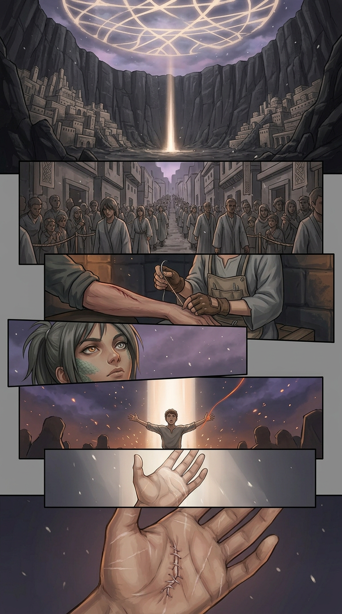
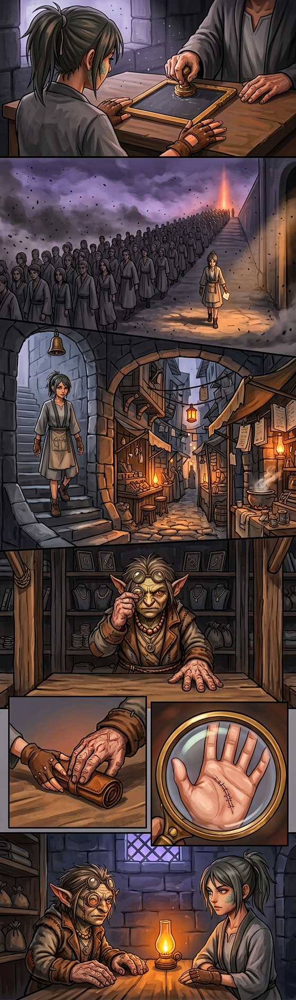
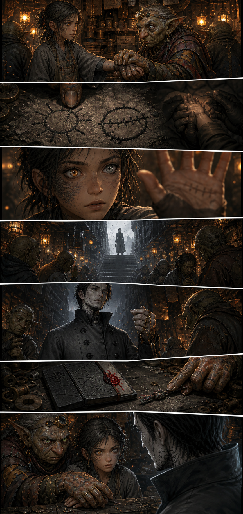
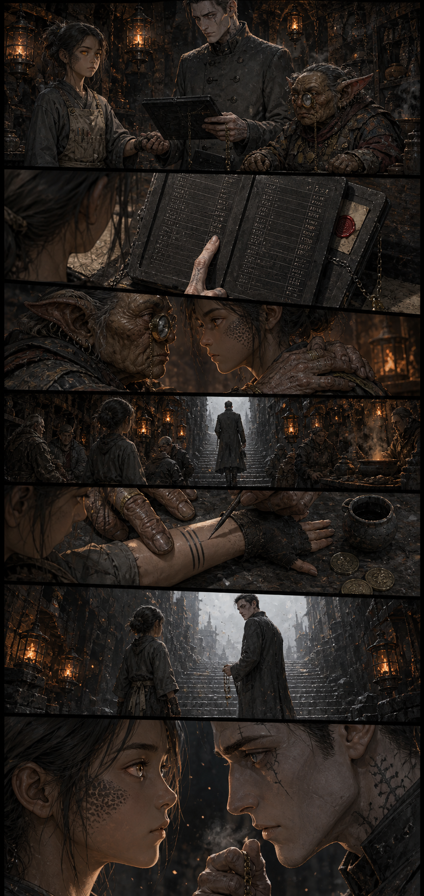
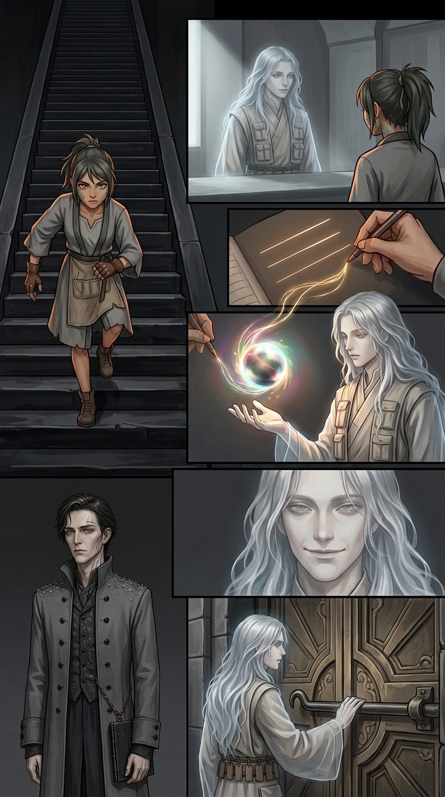
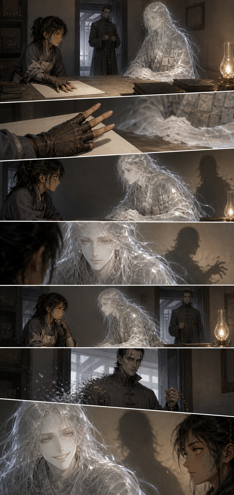
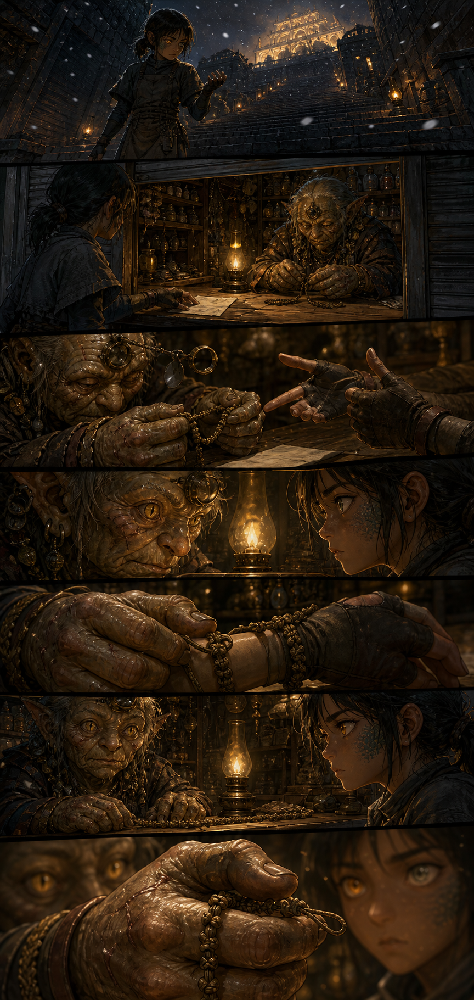
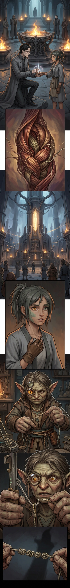
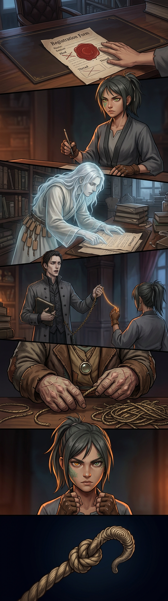
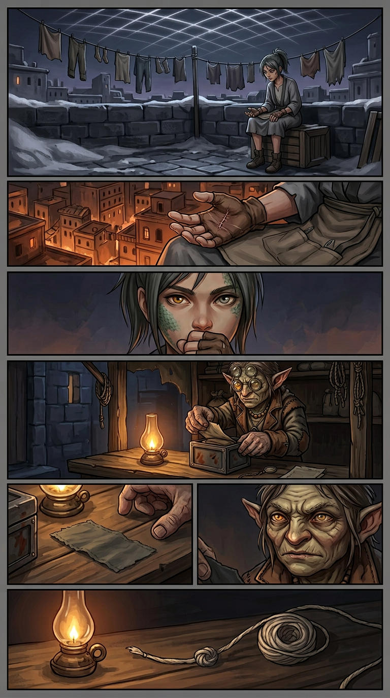

Chapter 001 — The Girl With No Thread
Arc I — The Unspooling · Agnikhand · 10 pages · complete · English + Hindi. Pick a page, or read straight through.

001
002
003
004
005
006
007
008
009
010Chapter 001 — The Girl With No Thread — CLOSE-OUT
Status: COMPLETE — 10 pages (001–010), EN + Hindi scripts, 10 page images, 4 full character sheets, 10 cast files, locations + glossary grown in-step. Arc: I — The Unspooling · Sector: Agnikhand · Open PR for this work: Kyabtao/Manga#2
Synopsis (ten lines, one per page)
- 001 — At the 412th Unspooling, mender girl Ira Sutar draws no thread; the hook reveals an old surgical stitch sewn across her empty palm.
- 002 — Kessa the Kshudra debt-appraiser reads zero debt on her: "the only dry thing in the flood — not a defect, a price." Hook: "Who sewed you, child?"
- 003 — Kessa explains the stitch (a door nailed shut before it could open — hidden, not missing); the market goes cold; Rekhak Vahni, Ash Council Debt-Reckoner, asks for Ira Sutar by name.
- 004 — The two-column invitation (climb at the third bell or be struck from the ledger); Kessa sells ash-ink — borrowed lines; on the stair Ira asks what Rekhak owes, and his chain stops: "the one ledger I am not permitted to open. My own."
- 005 — The clear-air climb (first panel with no ash); Patra the Preta broker offers three blank lines — existence as payment — for one hour of her palm under commissioned Sight.
- 006 — Ira negotiates mender-style; Patra answers the stitch question with a material (thread that has never been pulled) and the drip (whoever sewed you was lending); Rekhak's one word: "Don't."
- 007 — Kessa names it a sealing, ties sixty hour-knots, and charges the mother-debt: one true thing — Ira's first debt.
- 008 — The hour: Rekhak kneels and sees the fold (her thread folded, pressed, sleeping, sewn round with shadowless thread); the silent second stops the Loom's hum citywide; "It moved."
- 009 — The form returns written with Kind Manav; Ira refuses existence-on-a-lie; Rekhak falsifies the audit (chain stops = lie); the cut hour-rope holds sixty-one knots.
- 010 — On her roof Ira vows "Sleep." over the closed stitch; Kessa opens the lockbox: forty years of shadowless cut-end, its knot the same uncanny whorl. The hum ends one note lower. END OF CHAPTER ONE.
Canon established in Chapter 1 (rules future pages must keep)
- The stitch is a sealing, not a mending; sewn with unpulled thread; what is under it is the fold — Ira's own thread, folded and sleeping. Who/why: locked (target reveal ~Ch. 200).
- Debt economics on-panel: every power use writes marks; Rekhak's Deep debt climbs page by page (neck → jaw → under-eye); collar hides it from 009.
- Rekhak's counting-chain: runs = control/boxed fear; stops = fear, awe, or lie (3 stops in Ch. 1: 004, 008, 009). A fourth stop must wait for Chapter 2+.
- Patra never lies; face/name don't hold; one held-sharp face per page (bent only for unpulled thread); shadow-lead = leaving, shadow-lag = costing; cannot be a party to a contract.
- Kessa's knot-thread cannot be cut by others and ends when she says so; knot-count is the chapter's clock; the sixty-first knot (the silent second) owes or is owed a minute — unresolved.
- Lantern rule (two-way): officials arriving = lanterns gutter toward the Council Stair; leaving = re-ignite behind them.
- Sight-vision art language: flat fields, hard edges, no lettering; everything casts a shadow except unpulled thread — which casts none in ordinary light either (010).
- The knot-shape (008 whorl / 009 fist / 10 swatch end) is the series fingerprint; no owner on panel.
- The Loom does not speak. The silent second and the lower note are events, not voices.
- Ash-ink fools eyes, not Sight; both Rekhak and Patra see through it and let her keep it.
- Up-terrace = no ash; basin = ash. Ira's ash-catch gesture is her climb-tell; her roof is her null- free place.
- Registers lie: Kind-line "Manav" exists, written and refused; "You exist. The line is what lies."
Open threads into Chapter 002 (do not resolve early)
| Thread | Planted | Target |
|---|---|---|
| Who sewed the stitch, and the lender | 001–006 | ~Ch. 200 |
| The crimson-sealed principal / lock-collector | 003–009 | first naming ~Ch. 20–30 |
| Rekhak's unreadable own-ledger + climbing debt | 004–009 | his Fraying arc |
| Kessa's swatch: what was it cut from? | 007–010 | mid-series |
| The sixty-first knot / the silent second's minute | 008–009 | payoff when the fold wakes |
| The mother-debt (one true thing) | 007 | paid in person, never cancelled |
| The mother at the Mendery | 001 (file), 007 (debt) | Mendery arc |
| Devaan (taut boy) & Bhan (dock worker) if they return | 001 cast notes | Ch. 2+ |
| The Council re-reviewing Rekhak's falsified audit | 009 lie | Ch. 002 Page 001 hook |
Bulk-cast ledger (card-game pipeline)
12 named characters/tracked identities + 12 object/extra card lines, all recorded in characters/cast-page-001..010.md with Name / Kind / Sector / Thread / Debt / Ability / Hook lines per series-bible/04-card-game-notes.md. Nothing may be dropped without a writer's-room note.